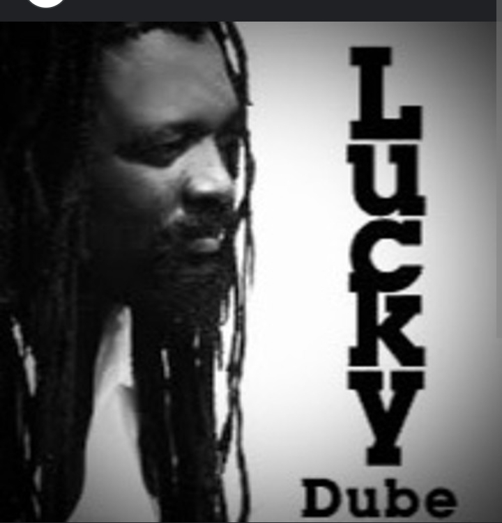

A memorial lecture in honour of the legendary reggae music artist, Lucky Phillip Dube, he was held at the University of Mpumalanga, mbombele campus.
this month marks 15-years since the killing of reggae artist Lucky Dube. He was best know for song such as Slaves and Remember me. The Ermole born musician was reffared to as the king of reggae. He was killed during the a hijacking Rosettenvile, south of Johannesburg in 2007. Speaking at his memorial lecture, Human Rights Activist Advocate Sipho Mantula says his death is still a mystrey.